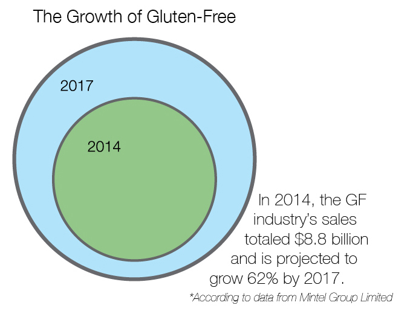
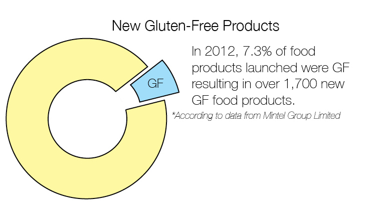

Less Gluten, More Sales
March 20, 2015
March 20, 2015
During spring of her junior year of high school, School of Communications freshman Erica Wilczynski went to the doctor for a routine check-up and joined the nearly 3.2 million Americans, or 1 percent of the population, diagnosed with celiac disease.
Despite the low number of Americans who suffer from celiac, almost one-third of adults said they want to cut down or completely eliminate gluten in their diet, according to a report by NPD Group, a market research information analysis service. Adults desire to be gluten-free because it’s viewed and widely popularized in the media as healthy, NPD analyst Darren Seifer, 39, said in a phone interview. NPD has tracked eating habits since the mid 1980s and gluten-intake specifically for at least the past five years.
“The gluten-free food market continues to thrive off those who must maintain a gluten-free diet for medical reasons, as well as those who perceive gluten-free foods to be healthier or more natural,” Mintel Group Limited food analyst Amanda Topper, 27, said in a press release from the global market research company. “The category will continue to grow in the near term, especially as FDA regulations make it easier for consumers to purchase gluten-free products and trust the manufacturers who make them.”
Gluten is a protein found in common grains such as wheat, rye and barley. For patients with celiac disease, gluten cannot be tolerated and the digestion of it damages the small intestine and interferes with nutrient absorption.
The growing trend of people cutting back on gluten is accompanied by the rise in the gluten-free food industry. The sales of gluten-free foods in supermarkets increased more than $1 billion between 2012 and 2013 to $6.59 billion, according to a report by the data analysis group SPINS.
Further surveys show that of the buyers of gluten-free products, 36 percent are not diagnosed with any medical reason to avoid gluten but voluntarily choose the foods for other reasons, according to Mintel’s surveys.
“Gluten-free foods have gotten a lot more popular and it’s been really helpful that there has been the whole gluten free trend in general,” Wilczynski, 18, from Minneapolis said. “A lot of people will go on a gluten-free diet to be more healthy or lose weight so it’s become a lot more common and in restaurants as well.”
Finding gluten-free foods at restaurants has been much easier within the past year and a half, Northwestern School of Communications major Allison Towbes, 19, said. Towbes, from Santa Barbra, California, is diagnosed with hypermobility syndrome, a condition in which she has extra space between her joints. Gluten is an inflammatory and causes increased joint pain.
“When I first started three years ago, there was not nearly as much food. Going out to eat was not an option at all,” she said. “Within the last year and a half, I can go almost anywhere and eat something.”
When the gluten-free trend first surfaced around 2010, it appeared to be similar to several other food and beverage industry fads, such as low-fat or low-carb, both of which saw an initial sales increase but then dropped dramatically within a year or so, Seifer said. Gluten-free consumers, however, have proven to be different.
“The restrictive nature of these diets makes it not so fun, so people start to fall off. But the thing with gluten is that an industry is built around it. Tons of products are labeled gluten-free for people, even items that are obviously gluten-free like meat, so there are so many products for them to choose from,” he said.
Gluten-free products haven’t only increased in supermarkets but in other venues as well. For example, every university in the Big 10 Conference has gluten-free options as part of their main course or prepares special gluten-free meals in their dining halls, according to their dining websites.
At Northwestern, each dining hall has a specified gluten-free and dietary-needs chef. The chef makes pre-made dishes for students looking for completely gluten-free meals.
“Students with celiac disease in particular have to avoid gluten so we have seen an increase in students who actually need that diet for a medical reason,” Northwestern Dietitian Justin Heaton, 33, said. “We did see a need to put in things like a completely gluten free station in a few dining places in particular.”
Off the college campus, 41 percent of U.S. chain restaurants planned in 2014 to serve gluten-free foods more often, according to surveys by SpenDifference, a supply chain support service for restaurant chains.
Completely gluten-free dining options have also began to appear more in the past five years. Wheat’s End Café is a celiac-safe coffee shop in Chicago that opened in 2013.
The small coffee shop serves students tapping laptop keys to make a deadline, out-of-towners looking for a quick bite and mothers with small children clearly showing the demand for a complete gluten-free menu.
“We figured out what was needed and how many people were actually affected by needing to be gluten-free,” owner Susan McMillan, 64, said. “Our hearts stay in it for a social perspective as we knew starting a celiac-friendly space for anyone who just wanted to feel safe from gluten completely would be really beneficial for people.”
Wheat’s End shows both area of the gluten-free market. Some customers eat there for a completely gluten-free meal, while others come for a tasty doughnut without realizing the lack of gluten, McMillan said.